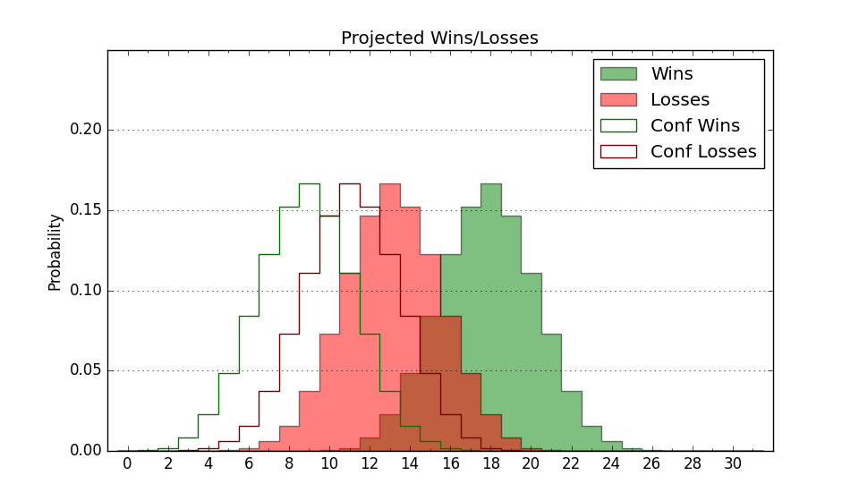

| Home | Game Probabilities | Conferences | Preseason Predictions | Odds Charts | NCAA Tournament |
| City: | Chestnut Hill, Massachusetts | |
| Conference: | ACC (8th)
| |
| Record: | 0-1 (Conf) 9-3 (Overall) | |
| Ratings: | Comp.: 8.9 (86th) Net: 10.6 (82nd) Off: 109.9 (75th) Def: 99.2 (110th) SoR: 23.5 (78th) |
| Remaining | ||||||
|---|---|---|---|---|---|---|
| Date | Opponent | Win Prob | Pred. | |||
| 1/2 | Wake Forest (73) | 58.6% | W 76-74 | |||
| 1/6 | @ Georgia Tech (121) | 45.8% | L 70-71 | |||
| 1/10 | @ Syracuse (85) | 34.5% | L 72-77 | |||
| 1/13 | @ Clemson (18) | 11.5% | L 67-82 | |||
| 1/15 | Notre Dame (201) | 85.6% | W 72-60 | |||
| 1/20 | North Carolina (17) | 30.0% | L 76-83 | |||
| 1/23 | @ Virginia Tech (53) | 23.0% | L 68-76 | |||
| 1/27 | @ Notre Dame (201) | 63.5% | W 68-64 | |||
| 1/30 | Syracuse (85) | 64.2% | W 77-72 | |||
| 2/6 | Florida St. (103) | 69.8% | W 75-69 | |||
| 2/10 | @ Duke (8) | 8.9% | L 67-83 | |||
| 2/13 | Louisville (223) | 87.9% | W 82-67 | |||
| 2/17 | Miami FL (58) | 51.7% | W 78-77 | |||
| 2/20 | @ Florida St. (103) | 40.4% | L 71-74 | |||
| 2/24 | @ North Carolina St. (81) | 33.6% | L 73-77 | |||
| 2/28 | Virginia (27) | 37.1% | L 60-63 | |||
| 3/2 | Pittsburgh (37) | 43.6% | L 71-73 | |||
| 3/6 | @ Miami FL (58) | 23.9% | L 73-81 | |||
| 3/9 | @ Louisville (223) | 68.0% | W 77-72 | |||
| Previous | Game Score | |||||
| Date | Opponent | Win Prob | Result | Off | Def | Net |
| 11/6 | Fairfield (256) | 90.4% | W 89-70 | 2.2 | 0.0 | 2.2 |
| 11/10 | @The Citadel (184) | 60.4% | W 75-71 | 8.0 | -6.2 | 1.8 |
| 11/15 | Richmond (95) | 68.2% | W 68-61 | -5.1 | 5.0 | -0.1 |
| 11/18 | Harvard (152) | 80.2% | W 73-64 | -8.6 | 7.5 | -1.1 |
| 11/22 | (N) Colorado St. (26) | 23.2% | L 74-86 | 1.5 | -2.9 | -1.4 |
| 11/23 | (N) Loyola Chicago (147) | 68.2% | L 68-71 | -11.3 | -1.9 | -13.2 |
| 11/29 | @Vanderbilt (234) | 69.2% | W 80-62 | 15.1 | 2.7 | 17.8 |
| 12/2 | North Carolina St. (81) | 63.3% | L 78-84 | -10.3 | -3.1 | -13.3 |
| 12/5 | Central Connecticut (264) | 91.4% | W 82-68 | -3.8 | 3.1 | -0.7 |
| 12/8 | Holy Cross (357) | 98.2% | W 95-64 | 5.7 | -2.7 | 2.9 |
| 12/10 | (N) St. John's (42) | 32.1% | W 86-80 | 20.4 | 1.1 | 21.5 |
| 12/21 | Lehigh (261) | 91.0% | W 85-69 | 8.5 | -5.6 | 2.9 |
| Stats & Trends | |||||
|---|---|---|---|---|---|
| Current | Day | Week | Month | Season | |
| Composite | 8.9 | -0.1 | +0.3 | +2.7 | +6.8 |
| Comp Rank | 86 | -2 | -1 | +24 | +49 |
| Net Efficiency | 10.6 | -0.2 | +0.4 | +0.3 | -- |
| Net Rank | 82 | -- | +1 | +14 | -- |
| Off Efficiency | 109.9 | -0.1 | +0.3 | +1.6 | -- |
| Off Rank | 75 | -- | +6 | +21 | -- |
| Def Efficiency | 99.2 | -0.1 | +0.1 | -1.3 | -- |
| Def Rank | 110 | -- | +1 | -5 | -- |
| SoS Rank | 241 | -4 | +6 | -83 | -- |
| Exp. Wins | 17.8 | -0.2 | +0.0 | +1.4 | +4.0 |
| Exp. Conf Wins | 8.8 | -0.2 | +0.0 | -0.0 | +1.6 |
| Conf Champ Prob | 0.3 | -0.1 | -0.1 | -0.2 | +0.1 |

| Advanced Stats | ||
|---|---|---|
| Stat | Value | Rank |
| Off Eff FG % | 0.533 | 78 |
| Off Ast Ratio | 0.158 | 82 |
| Off ORB% | 0.265 | 212 |
| Off TO Rate | 0.126 | 45 |
| Off FT Ratio | 0.309 | 226 |
| Def Eff FG % | 0.477 | 106 |
| Def Ast Ratio | 0.127 | 87 |
| Def ORB% | 0.267 | 151 |
| Def TO Rate | 0.165 | 89 |
| Def FT Ratio | 0.277 | 80 |